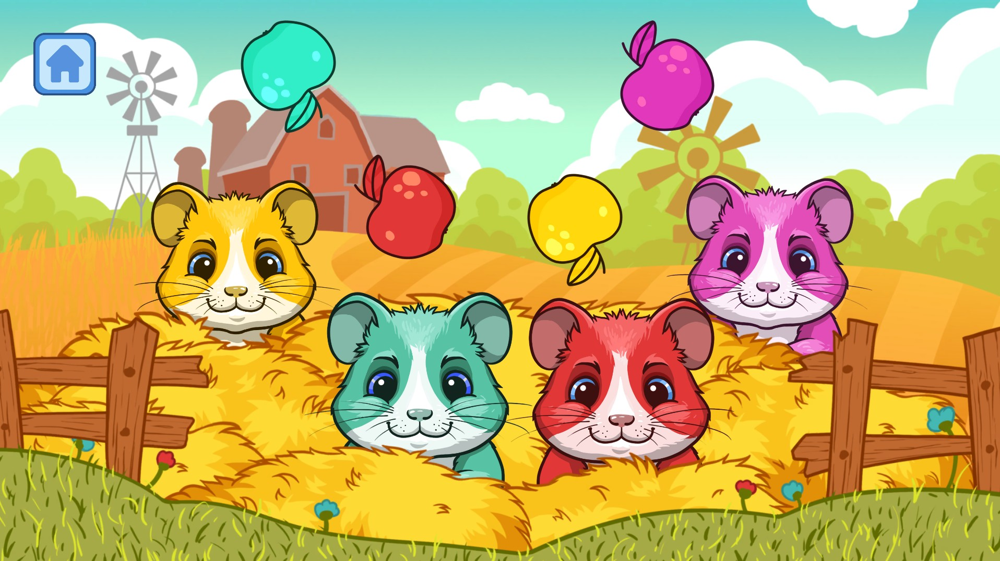
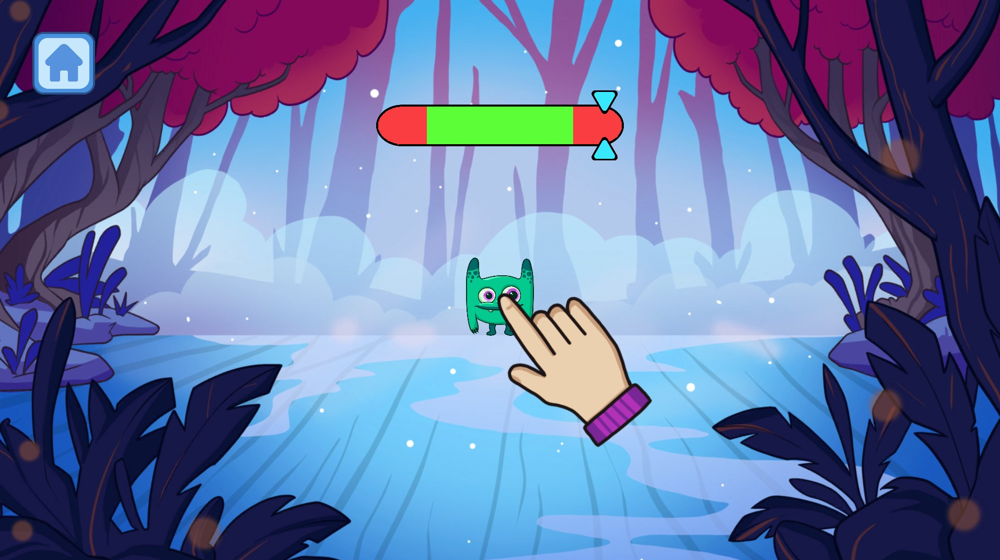
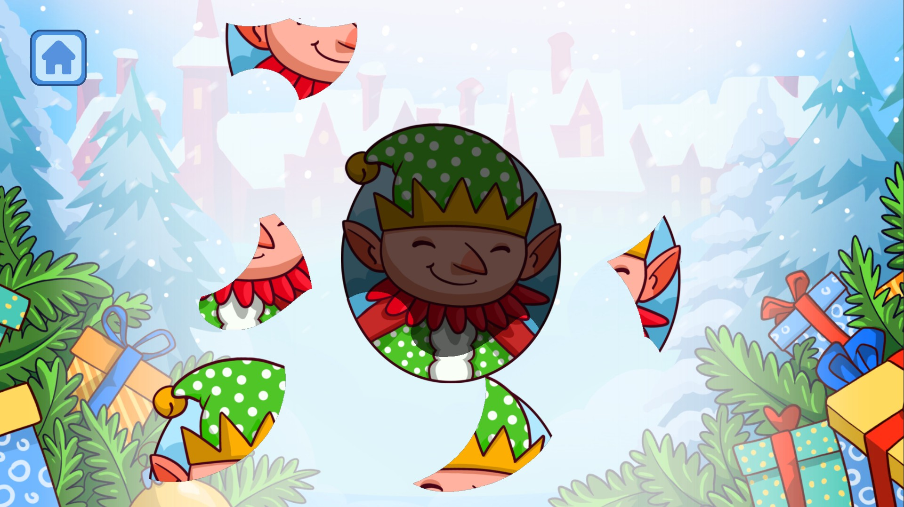
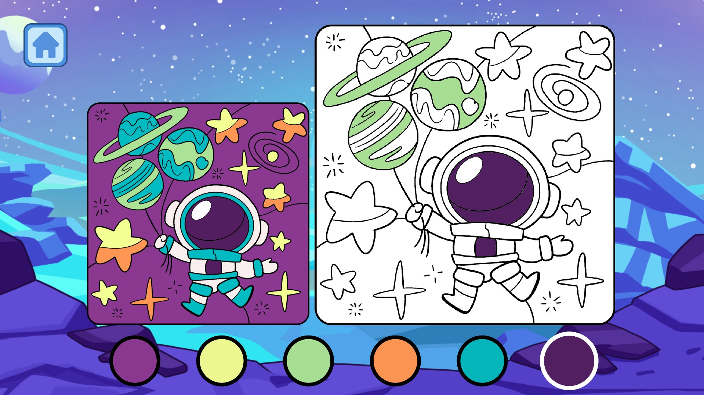

About the Game
Designed specifically for young children to support early cognitive development through fun and interactive activities. Features a collection of mini-games focused on color recognition, shape matching, memory, and logical thinking.





Designed specifically for young children to support early cognitive development through fun and interactive activities. Features a collection of mini-games focused on color recognition, shape matching, memory, and logical thinking.
As the sole Unity developer on this commercial project, I implemented the full gameplay logic, built multiple mini-games from scratch, designed a reusable ScriptableObject architecture, integrated DOTween UI animations and Spine hints, and collaborated closely with the artist.